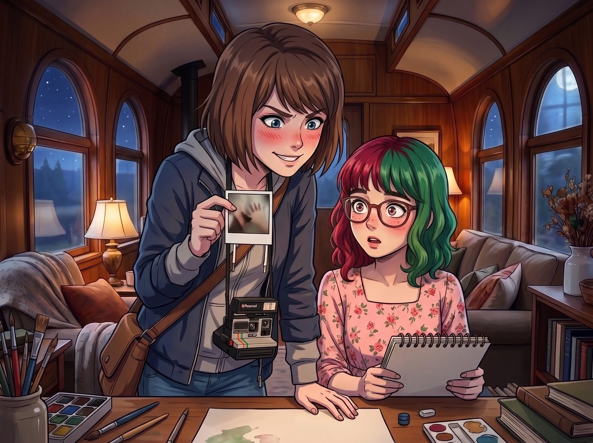
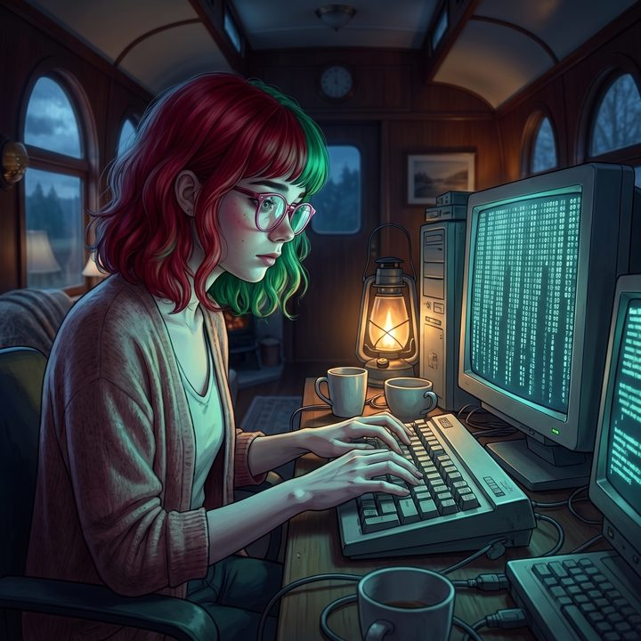

AI包工頭


夜晚的二號車廂裡，只有角落的煤油燈和幾台顯示器的冷光在閃爍。
Max 盤腿坐在沙發上，手裡拿著拍立得相機，鏡頭對準了坐在工作站前的 Lily。在過去的十分鐘裡，車廂裡迴盪著令人頭皮發麻的機械鍵盤敲擊聲。Lily 的雙手在鍵盤上飛速起落，在微弱的螢幕反光下，那纖細蒼白的手指幾乎化作了一團模糊的殘影。螢幕上，無數行幽綠色的代碼如瀑布般瘋狂滾動。
一、殘影般的手速
「咔嚓。」Max 按下快門，等待相紙吐出、顯影。她看著照片上 Lily 那模糊的雙手，終於忍不住心中的八卦之火。
「Lily，我觀察妳很久了。」Max 拿著照片走到工作台旁，語氣裡充滿了純粹的好奇，「每次妳在微調聯邦系統，或者寫那些追蹤我們物資的腳本時，妳的手指快到我都拍不清殘影。妳是從五歲開始就在地下室裡盲打駭客技術嗎？妳的大腦裡是不是自帶一個編譯器？」
正準備開易開罐啤酒的 Chloe 也湊了過來：「是啊實習生，我看過那種駭客電影。妳剛才那手速，說妳正在駭進什麼機密設施我都信。」
聽到兩人的問話，Lily 的雙手突然停了下來。她輕輕按下了一個Enter鍵，螢幕上隨即彈出一個綠色的部署成功提示框。
Lily 轉過身，捧起手邊的溫熱洋甘菊茶，推了推鼻樑上的反光圓框眼鏡。她的臉上再次浮現出那種乖巧、無害，卻又充滿了絕對理性的微笑。
二、上個世紀的浪漫主義誤解
「Max 學姐，Chloe 學姐，妳們對駭客這個詞存在著上個世紀的浪漫主義誤解。」Lily 用軟糯的聲音慢條斯理地解釋道，「親手逐行編寫代碼，是對碳基生物腦力資源的極大浪費。在當前的技術語境下，那是一種極度低效的勞動模型。」
Max 愣了一下：「那妳剛才敲得那麼快是在幹嘛？玩打字遊戲嗎？」
「我是在寫提示詞，以及進行結果驗收。」Lily 喝了一小口茶，指著螢幕上那密密麻麻的代碼：「這些中間路徑的實施，早就全部交給生成式AI工具去完成了。」
車廂裡的幾個人都安靜了下來，等著這個行政黑魔法師的科普。
三、四分半鐘的工作流
「舉個例子。」Lily 調出一個後台界面，「剛才我需要寫一個腳本，用來實時解析那排商用太陽能實驗板傳回能源部的底層日誌，從中合法過濾掉我們用電的紀錄差異。如果手動寫，我需要查閱最新的解析器文檔，構建抽象語法樹，處理各種報錯，這至少需要耗費我兩個小時的睡眠時間。」
「但我沒有那麼做。我只負責定義絕對精確的業務需求。」Lily 的眼神變得銳利起來：「我向AI描述輸入的數據格式、輸出的日誌標準，以及必須符合的合規邊界。AI 在三秒鐘內吐出了所有的腳本代碼。接著，我會立刻把它扔進自動化的漏洞掃描工具裡進行靜態分析，確保這段代碼沒有暴露我們的資訊，也沒有違反任何開源授權條款。」
Lily 輕描淡寫地描繪著她那令人窒息的工作流：「一旦漏洞掃描通過，我只需點擊確認，腳本就會自動推送到版本控制平台，然後無縫部署到我們掛載在雲端平台上的匿名伺服器裡。整個過程耗時：四分半鐘。」
Chloe 聽得目瞪口呆，手裡的啤酒都忘了喝：「靠……所以妳根本不是在寫代碼？妳是個AI的包工頭？！」
四、高階專案管理
「這叫高階專案管理與架構控制，白痴。」一直在一旁修指甲的 Victoria 冷笑了一聲，毫不掩飾她對 Lily 這種工作模式的欣賞：「只有底層的社畜碼農才會為了幾行Bug熬夜掉頭髮。真正的掌權者，只負責提出需求、下達KPI，然後拿鞭子抽著下面的人——或者AI——去把活幹完。」
「Victoria 學姐的比喻非常精準。」Lily 乖巧地點點頭，她看向 Max 手裡那張充滿殘影的照片：「Max 學姐，妳看到的那些殘影，其實是我在瘋狂地審查AI的輸出結果，並不斷修改提示詞來糾正它的邏輯偏差。」
Lily 的聲音慢慢沉了下來，帶著一種對於失控的本能警惕：「生成式AI是非常強大且高效的工具，但它們有一個致命的弱點——它們沒有法律意識和合規邊界。如果不加限制地讓它們去寫駭客腳本，它們會產生災難性的幻覺，寫出那種雖然能完成任務，但會立刻觸發安全警報的違規代碼。」
她輕輕撫摸著鍵盤邊緣，彷彿在撫摸某種危險的野獸：「在這個世界上，無論是人類還是AI，混亂都是常態。我的工作不是去創造代碼，而是給這些強大但不守規矩的怪物，套上絕對嚴密的合規枷鎖。我只在乎結果是否完美符合我們的利益，並且——」
Lily 抬起頭，露出一個純潔而致命的微笑：「——並且在法律上，無懈可擊。」
五、優先級最高的娛樂時間
Max 看著眼前這個把最高尖端技術當作普通辦公軟體來用，只為了追求絕對控制和絕對安全的十九歲女孩，默默地把那張拍立得照片收進了口袋。
「好的，包工頭實習生。」Max 笑著走過去，把手裡的一包薯片放在 Lily 旁邊，「既然妳把苦力活都推給了AI，那妳今晚的腦力應該還有剩餘。陪我看部電影吧，不准在腦子裡計算版權稅的那種。」
Lily 看著那包薯片，又看了看 Max 溫暖的笑容，那層用代碼和合規法條築起的冰冷外殼稍微融化了一點。她輕輕點了點頭。
「好的，Max 學姐。我已經將今晚的娛樂時間錄入系統，優先級：最高。」